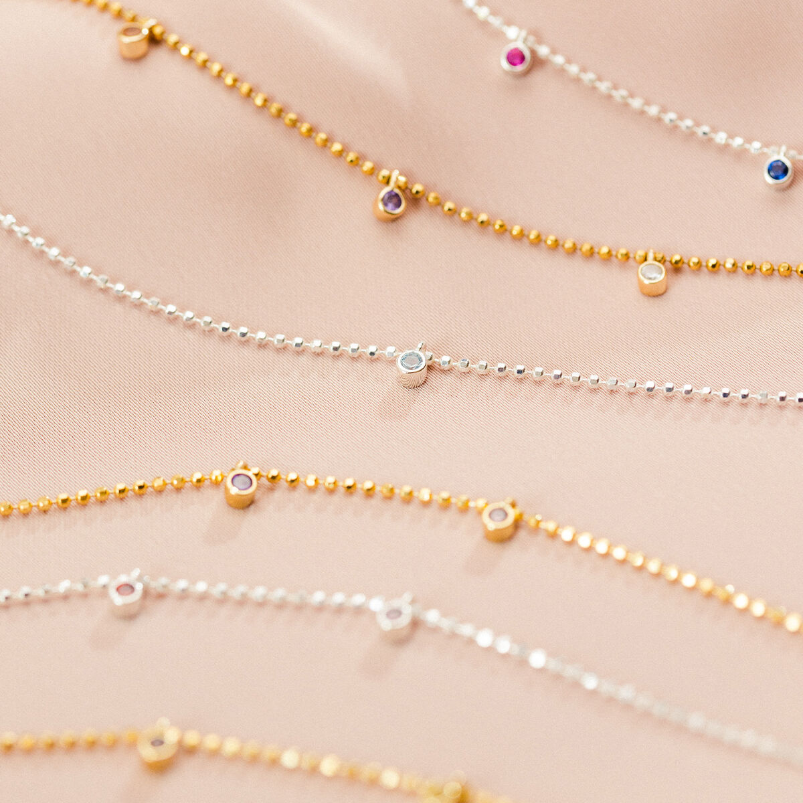
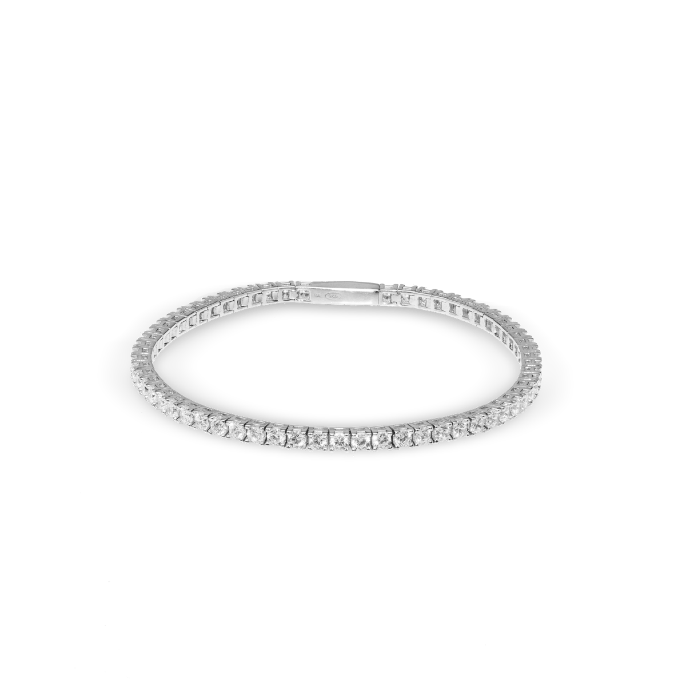
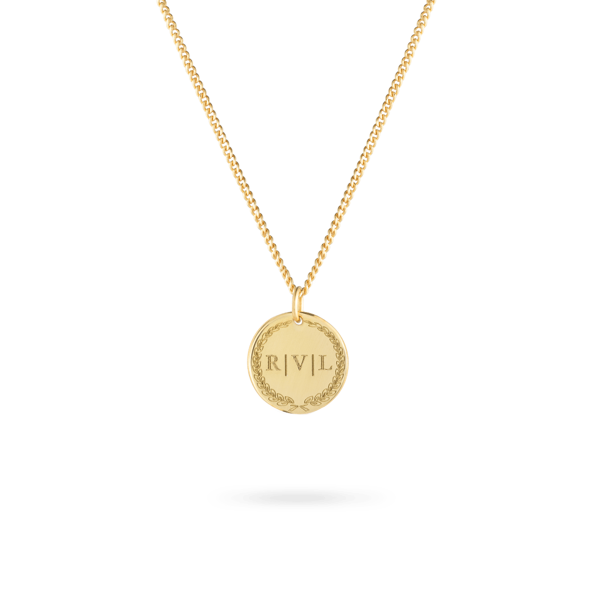
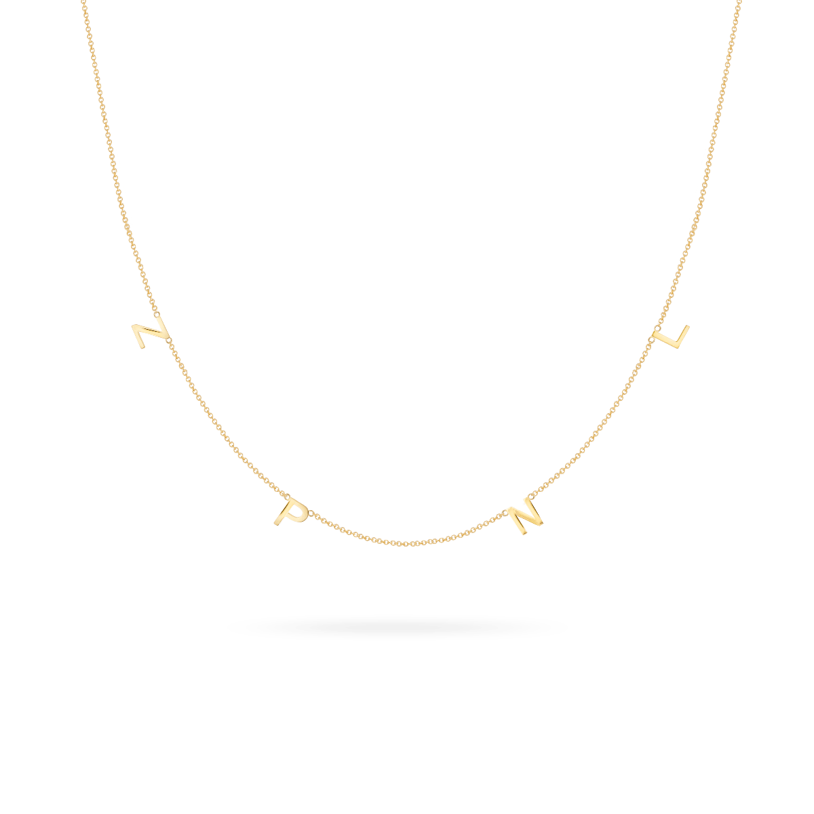

Nieuw: Bibi Bubble Birthstone Necklace
Shop nu
Best Sellers
-
Populair
Tilly Tennis Bracelet
Vanaf €149,00
 -
Populair
Initial Coin Necklace
Vanaf €99,00
 -
Populair
Letter Necklace
Vanaf €179,00

Vedder & Vedder: Ons Verhaal
Anne & Esther zijn Vedder & Vedder begonnen vanuit een behoefte om gepersonaliseerde sieraden te maken, persoonlijke sieraden met een eigen verhaal. Het resultaat zijn collecties bestaande uit custom sieraden van armbanden met naam, kettingen met een initiaal tot aan ringen met een (geboorte) steen - en nog veel meer.
Voor hem
Gepersonaliseerde items voor de vaders, beste vrienden en geliefden in ons leven. Perfect voor een cadeautje en natuurlijk om voor jezelf te kopen.
Kids collection
Twinning is winning met Vedder & Vedder haar meest iconische items in miniversie voor de kleintjes.
Goed
Gebaseerd op 3.504 reviews
Explore your favourite styles and share your own
Meer inspiratie op onze instagram
Handgemaakte sieraden
Handgemaakt met liefde in Amsterdam